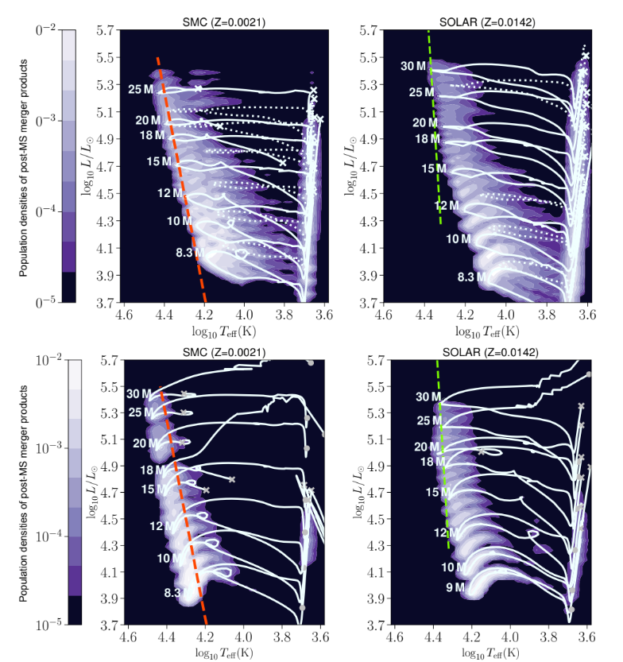

Astrophysics & Research
Here are some research projects I've done! These were incredibly interesting endeavors, and I'm very grateful for these experiences and the professors that helped me along the way.
Hierarchical Bayesian Analysis of Pulsar Ellipticity Hyperparameters (WIP)
Relevant Topics: Hierarchical Bayesian Inference, Gravitational Waves, Data Analysis, Pulsars
What the project was: For the summer of '26 I wanted to learn more about data analysis, and was especially interested in its applications in astrophysics. So, after speaking with Professor Max Isi, he offered to show me the ropes of hierarchical Bayesian inference in the context of constraining pulsar ellipticities, with the end goal of running these models on the newest batches of processed LIGO data. For context, general relativity predicts that pulsars, like merging black holes, emit gravitational waves. The difference, however, is that pulsars "release" these waves continuously. Unlike inspiraling black holes, which emit intense transient waves, these pulsars emit quiet continuous gravitational waves, order of magnitude quieter than the merger counterpart. What enables pulsars to emit these continuous waves is little deformations on their surfaces, creating a quadrupole (or higher multipoles) that would emit a gravitational wave. These deformations are called ellipticities, and are exactly what I was looking for.

Day to day: Much of the time was spent exploring hierarchical modeling and making sure I understood exactly what was going on behind the hood, from the basics of bayesian statistics to numpyro sampling. There was an especially big focus on the creation of hierarchical models themselves, and the statistical theory behind it. Parameter marginalization is such an interesting and incredibly powerful tool, its kind of crazy.
The nitty gritty: Data was taken from the ATNF Pulsar Catalogue, LIGO S6, and proprietary posterier samples from LIGO O4. Data analysis was done in python using NumPyro and JAX, specifically NumPyro NUTS and various classes from NumPyro.distributions. Check out my github.

by Distribution
Code: View on GitHub!
Systematic 1-D Stellar Evolution & Merger Grids
Relevant Topics: Stellar Simulation, Data Processing, Shell, MESA
What the project was: Joining Dr. Athira Menon's stellar mergers group, this was my first real exposure to astrophysics research and proper simulation. I built and ran systematic 1-D stellar evolution grids in MESA, testing how mergers contribute to the blue supergiant (BSG) family. Essentially, BSGs are luminous, massive stars that play an incredibly important role in galactic chemical enrichment. At the same time, their origins are mysterious. 70% of these stars are observed to be single (not in orbit with another star) and they populate a region of the Hertzsprung-Russel (HR) diagram that is notoriously empty (the HR gap). This is primarily a problem because classical single-star evolutionary models can only reproduce the cooler members of BSGs, meaning there is something vital missing in our understanding of stellar evolution (mergers!).
Day to day: I spent the majority of my time building stellar grids to test potential merger contributions to the HR gap. By varying various parameters (metallicity, internal mixing procedures, convective overshoots, rotational mixing, semiconvection, accretion rates, binary mass ratios) I captured environments from all across the galaxy, and across various possibilities of unconstrained parameters. By creating Kippenhahn diagrams and HR-diagram tracks and comparing across literature I, along with the rest of the team, assessed the inner-workings of the physics of merger-born stars.
The findings!: Only merger remnants naturally populate the hot region in the Hertzsprung gap (>10,000 K)! This occurs between the turn-off of the main sequence and the single-star blue loops. Because merger born stars have larger envelopes due to Roche lobe mass transfer, they sustain a longer lived core helium burning phase. With no dependence on metallicity and being insensitive to mixing, this is a very convincing argument for stellar mergers being a common evolutionary pathway.

Credit: Athira Menon & Jerry Wang
Feat: Me, Jerry, Dr. Menon